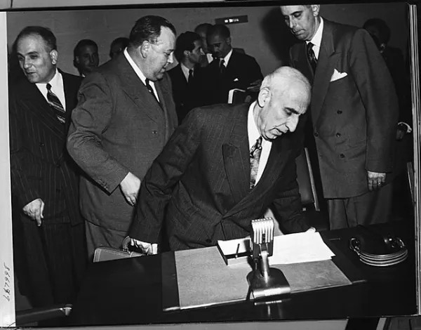
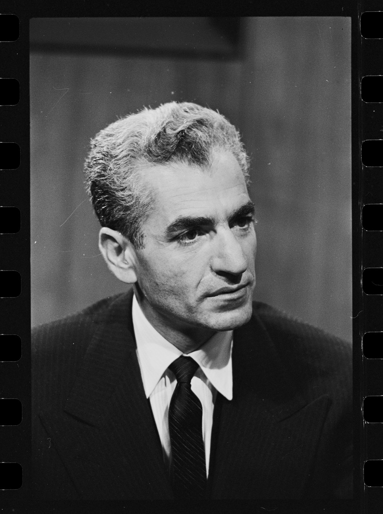

Pada 19 Agustus 1953, tank-tank mengepung rumah Perdana Menteri Iran di Tehran. Mohammad Mossadegh — yang dua tahun sebelumnya dinobatkan Time sebagai Man of the Year — digulingkan dalam sebuah operasi rahasia gabungan CIA dan MI6. Nama sandinya: Operasi Ajax. Biayanya, menurut klaim para pelakunya, hanya sekitar US$1 juta. Dampaknya: Timur Tengah berubah selama puluhan tahun.

Akarnya: Minyak Iran Dikuasai Inggris
Sejak 1913, industri minyak Iran dikuasai perusahaan Inggris — Anglo-Persian Oil Company, yang kemudian menjadi Anglo-Iranian Oil Company (AIOC, kelak dikenal sebagai British Petroleum/BP). Keuntungan minyak Iran mengalir ke London, sementara rakyat Iran hidup dalam kemiskinan di atas ladang minyaknya sendiri.
Pada 15 Maret 1951, parlemen Iran (Majlis) mengesahkan undang-undang nasionalisasi. AIOC diganti National Iranian Oil Company (NIOC), yang mengambil alih kilang raksasa Abadan pada 20 Juni 1951. 28 April 1951, Mohammad Mossadegh — tokoh gerakan nasionalisasi — diangkat menjadi Perdana Menteri atas persetujuan Majlis dan Shah. Setahun kemudian, majalah Time menobatkannya Man of the Year 1951.
Inggris Membalas: Embargo dan Blokade
London tidak tinggal diam. Inggris membalas nasionalisasi dengan embargo ekonomi total: Royal Navy mencegat tanker Rose Mary yang mengangkut minyak Iran (Juli 1952), pembeli minyak Iran diancam tuntutan hukum, dan perusahaan-perusahaan minyak raksasa dunia bersepakat untuk tidak mengisi kekosongan yang ditinggalkan AIOC.
Hasilnya brutal: produksi minyak Iran anjlok sekitar 96% — dari 664.000 barel per hari (1950) menjadi hanya 27.000 barel per hari (1952). Iran memenangkan kedaulatan di atas kertas, tetapi kehilangan kemampuannya menjual minyak ke dunia.
1952: Mossadegh Hampir Jatuh Duluan
Pada Juli 1952, Mossadegh mengundurkan diri setelah Shah menolak memberinya jabatan Menteri Perang. Shah menunjuk Ahmad Qavam sebagai pengganti. Yang terjadi kemudian mengejutkan semua pihak: demonstrasi massal meledak selama lima hari (dikenal sebagai Siyeh-i Tir / 30 Tir) di Tehran, Hamadan, Ahvaz, Isfahan, dan Kermanshah — lebih dari 250 orang tewas atau luka serius. Shah tunduk. Pada 21 Juli 1952, Mossadegh kembali berkuasa — kali ini dengan kontrol penuh atas militer.
London dan Washington membaca peristiwa itu sebagai sinyal bahaya: Mossadegh terlalu populer untuk dilawan secara terbuka. Maka mereka memilih jalan gelap.
Operasi Ajax: Anatomi Sebuah Kudeta
Operasinya punya dua nama: Ajax (CIA) dan Boot (MI6 Inggris). Di lapangan dipimpin Kermit Roosevelt Jr. — cucu Presiden Theodore Roosevelt. Metodenya, menurut dokumen internal CIA yang bocor dan pengakuan resmi AS tahun 2013: propaganda (mengatur pemberitaan anti-Mossadegh di pers Iran dan AS), suap (pejabat, perwira militer, tokoh agama), dan mobilisasi massa bayaran untuk turun ke jalan.
Timeline-nya dramatis. 15–16 Agustus 1953: upaya pertama GAGAL — Kolonel Nassiri ditangkap saat hendak menyerahkan dekrit Shah yang memecat Mossadegh. Shah panik dan kabur ke Baghdad, lalu ke Roma. Semua pihak mengira operasi sudah mati.
Tetapi Kermit Roosevelt menolak pulang. 19 Agustus 1953: massa pro-Shah — sebagian dibayar, sebagian tulus — bergerak bersama unit-unit tentara. Tank mengepung rumah Mossadegh. 20 Agustus: Mossadegh menyerah. Fazlollah Zahedi diangkat menjadi perdana menteri baru. 22 Agustus: Shah kembali ke Tehran — ke takhta yang direbutkan kembali untuknya oleh dinas intelijen asing. Korban jiwa: 200–300 orang tewas.
Catatan: klaim bahwa agen CIA melakukan operasi false-flag (menyamar sebagai komunis lalu menyerang tokoh agama) memang muncul dalam sejarah internal, tetapi cakupannya masih diperdebatkan sejarawan — kami tidak menyajikannya sebagai fakta bulat.

Harganya: 26 Tahun Kediktatoran
Setelah kudeta, Iran memasuki era baru. Shah berkuasa 26 tahun (1953–1979) — hingga akhirnya digulingkan Revolusi Iran 1979, revolusi yang benih-benihnya ditanam oleh kudeta 1953 itu sendiri.
Minyak Iran pun dibagi ulang lewat Konsorsium 1954: 40% untuk BP (Inggris), 40% untuk lima perusahaan Amerika (Exxon, Mobil, SoCal, Texaco, Gulf), 14% Shell, 6% perusahaan Prancis. Iran "menang" secara formal — tetapi kendali produksinya terbagi dengan perusahaan-perusahaan Barat selama 25 tahun.
Untuk menjaga kekuasaan, rezim Shah membangun SAVAK (1957) — dinas intelijen yang dibentuk dengan bantuan organisasi dan pelatihan CIA, yang kemudian dikenal karena metode represifnya.
Dan Mossadegh sendiri? Diadili atas tuduhan pengkhianatan, dipenjara tiga tahun, lalu menjalani tahanan rumah sampai wafat pada 5 Maret 1967. Ia dimakamkan di rumahnya sendiri — rezim takut pemakamannya menjadi ajang protes politik.
Satu juta dolar untuk menggulingkan sebuah negara. Enam puluh tahun untuk mengakuinya.
Pengakuan yang Datang Terlambat 60 Tahun
Selama puluhan tahun, Washington membantah terlibat. Baru pada Maret 2000, Menteri Luar Negeri Madeleine Albright mengakui AS "memainkan peran penting dalam mengorganisir penggulingan" Mossadegh — menyebutnya "kemunduran bagi perkembangan politik Iran". Pada 4 Juni 2009, Presiden Barack Obama dalam pidato Kairo-nya menjadi presiden AS pertama yang mengakui secara terbuka peran AS dalam penggulingan "pemerintahan Iran yang dipilih secara demokratis".
Dan pada 19 Agustus 2013 — tepat 60 tahun setelah kudeta — CIA mendeklasifikasi dokumen internalnya lewat National Security Archive: "The military coup... was carried out under CIA direction as an act of U.S. foreign policy, conceived and approved at the highest levels of government." Satu generasi penuh rakyat Iran hidup tanpa pengakuan resmi itu.
Analisis: Dibaca Pakai Lensa Ketahanan Nasional
1. Nasionalisasi SDA tanpa kemandirian sistem = rentan dibalas. Iran menasionalisasi minyak, tetapi tidak punya teknisi, jaringan pemasaran, dan sistem keuangan sendiri untuk menjualnya. Inggris tinggal embargo dan blokade — produksi anjlok 96%. Relevansinya ke Indonesia hari ini jelas: hilirisasi nikel dan bauksit harus dibarengi kemandirian teknologi, pasar, dan pembiayaan. Tanpa itu, "nasionalisasi" tinggal jadi slogan yang mudah dipatahkan dari luar.
2. Kekuasaan yang ditopang asing itu rapuh. Shah kembali ke takhta di atas tank dan uang asing — dan 26 tahun kemudian ia jatuh karena tidak punya akar legitimasi di dalam negeri. Ketahanan politik sebuah negara dibangun dari legitimasi domestik, bukan dari restu kekuatan asing.
3. Intervensi modern tidak perlu invasi. Ajax menang lewat operasi intelijen: propaganda, suap, massa bayaran, manipulasi informasi. Tidak satu pun tentara AS mendarat di Tehran. Relevansi ke Indonesia hari ini: ketahanan siber, literasi informasi publik, dan ketahanan elite terhadap kooptasi asing sama pentingnya dengan ketahanan militer konvensional.
Arsip & Referensi
Angka dan peristiwa di artikel ini diverifikasi silang dari sumber-sumber berikut:
- National Security Archive (GWU) — dokumen CIA dideklasifikasi 19 Agustus 2013 ("The Battle for Iran").
- Wikipedia — "1953 Iranian coup d'état", "Mohammad Mosaddegh", "Nationalization of the Iranian oil industry", "Consortium Agreement of 1954" (linimasa & angka, diverifikasi silang).
- Stephen Kinzer, All the Shah's Men — kutipan dana operasi (~US$1 juta).
- Tesis Georgetown University (David Painter) — studi kasus AS–Mossadegh 1951–1953.
- AFP via IranFocus — pidato Obama, Kairo, 4 Juni 2009.
- Pernyataan Menlu Madeleine Albright, Maret 2000.
Kredit foto arsip: Mossadegh di PBB 1951 — Department of State / Truman Library, public domain; Shah 1962 — Marion S. Trikosko / Library of Congress, public domain.
Catatan redaksi: kadar "demokratis" Mossadegh diperdebatkan sejarawan (ia diangkat Shah atas persetujuan Majlis, bukan pemilu langsung) — kami menyajikannya apa adanya. Klaim false-flag CIA masih diperdebatkan dan tidak disajikan sebagai fakta bulat.
Suka bedah kayak gini? Versi ringkasnya ada di Instagram & TikTok @jejakkuasa — follow biar nggak ketinggalan titik balik berikutnya.